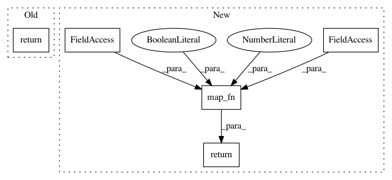

b9ac3d9f91197d14733024d464bd45061d40b0b1,tensorflow_datasets/core/features/sequence_feature.py,Sequence,decode_example,#Sequence#Any#,253
Before Change
def decode_example(self, tfexample_data):
Wrapper around SequenceDict.
return self._seq_feature.decode_example({"inner": tfexample_data})["inner"]
def _additional_repr_info(self):
Override to return addtional info to go into __repr__.
return {"feature": repr(self._seq_feature["inner"])}
After Change
// tf.data pipelines are always executed in Graph mode.
// Apply the decoding to each of the individual feature.
return tf.map_fn(
self.feature.decode_example,
tfexample_dict,
dtype=self.dtype,
parallel_iterations=10,
back_prop=False,
name="sequence_decode",
)
def save_metadata(self, *args, **kwargs):
See base class for details.
self._feature.save_metadata(*args, **kwargs)
In pattern: SUPERPATTERN
Frequency: 3
Non-data size: 5
Instances
Project Name: tensorflow/datasets
Commit Name: b9ac3d9f91197d14733024d464bd45061d40b0b1
Time: 2019-05-13
Author: epot@google.com
File Name: tensorflow_datasets/core/features/sequence_feature.py
Class Name: Sequence
Method Name: decode_example
Project Name: tensorflow/models
Commit Name: 4ddc9f2d806530ceb99a86a621075a4a9813df62
Time: 2017-07-18
Author: derekjchow@gmail.com
File Name: object_detection/exporter.py
Class Name:
Method Name: _tf_example_input_placeholder
Project Name: tensorflow/models
Commit Name: 4ddc9f2d806530ceb99a86a621075a4a9813df62
Time: 2017-07-18
Author: derekjchow@gmail.com
File Name: object_detection/exporter.py
Class Name:
Method Name: _encoded_image_string_tensor_input_placeholder